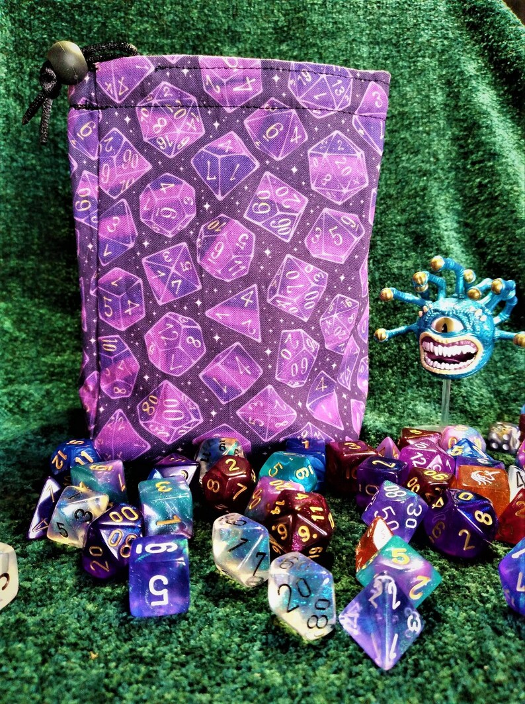
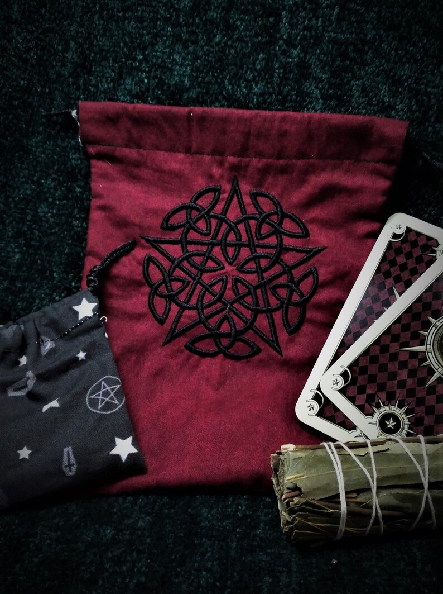
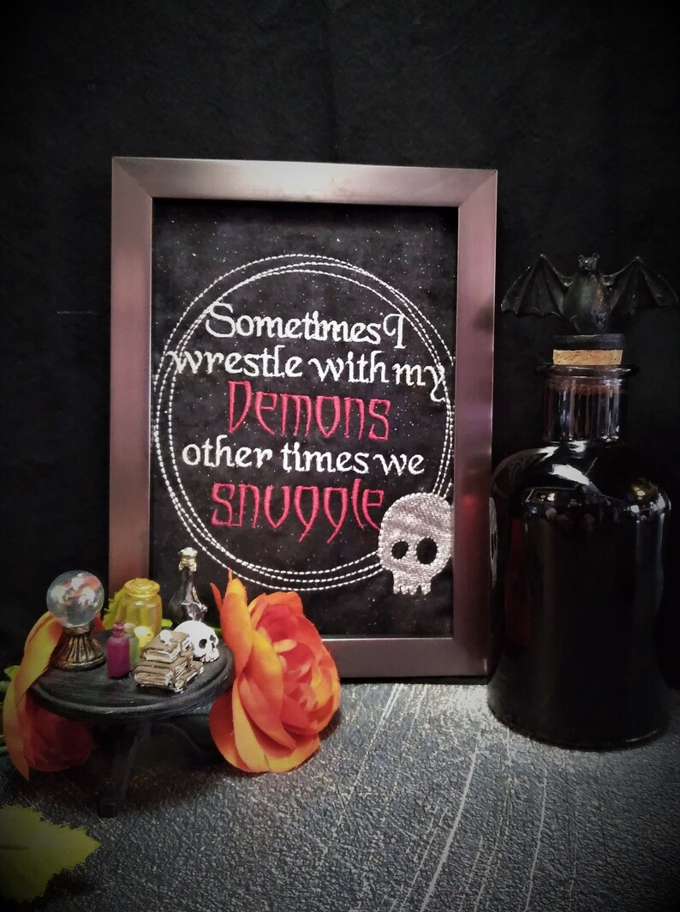
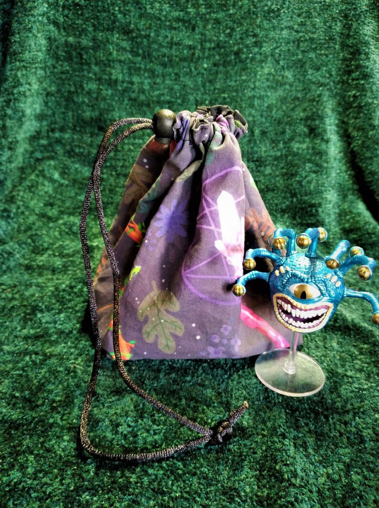
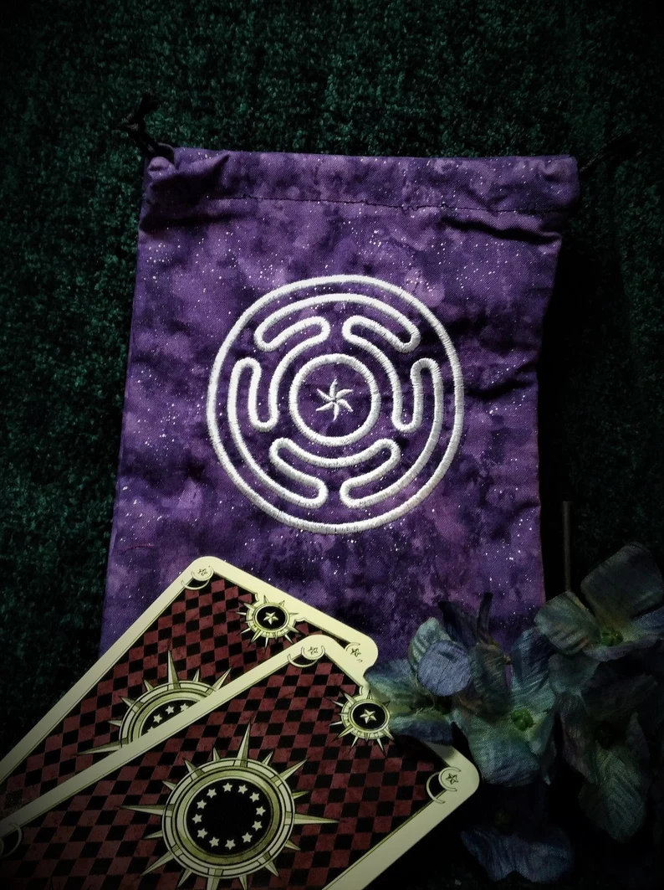
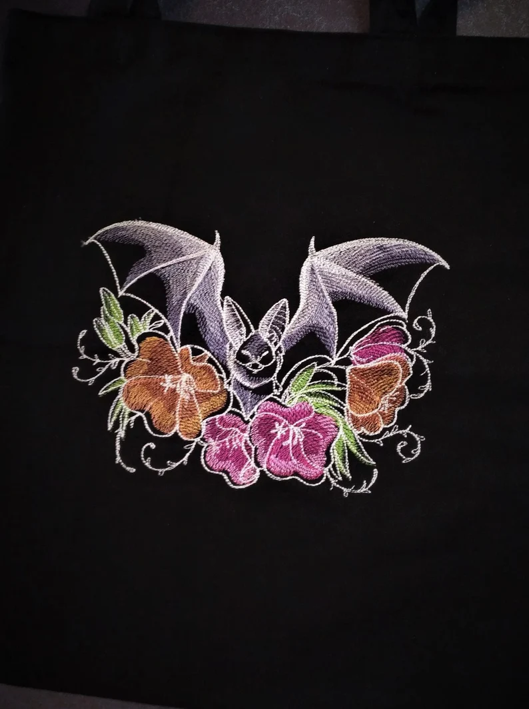
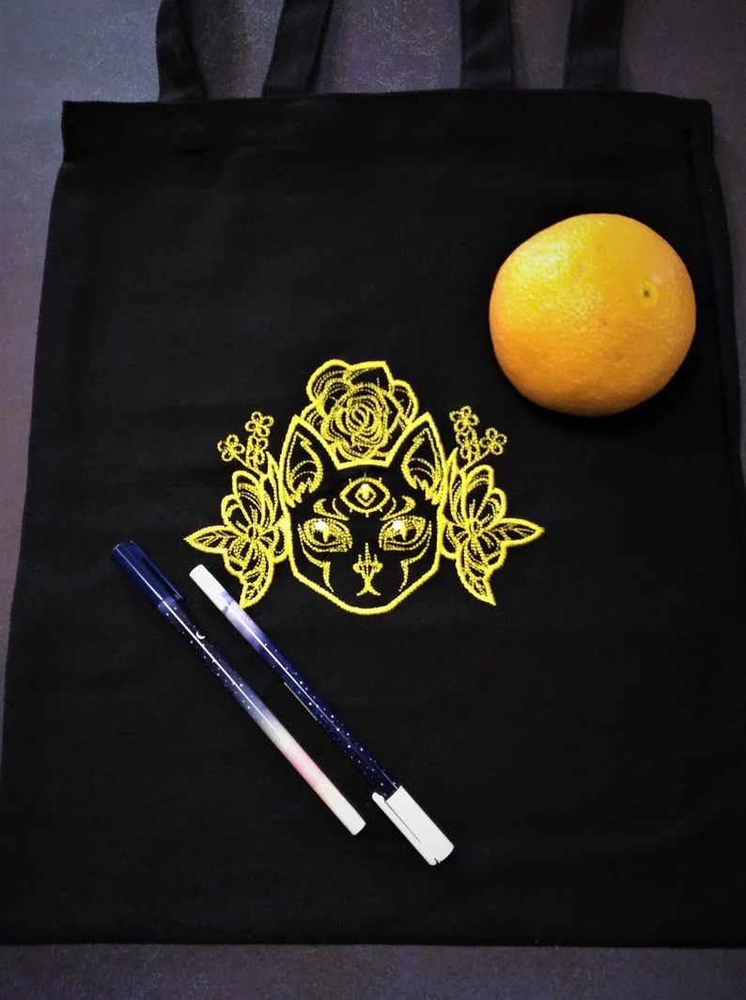

My Gallery
-

Galactic Purple Dice Bag
Choose your weapon with this square, black lined, Galactic dice, dice bag! It is stable enough to stand up on its own, holds many dice sets, and closes tight with a single hole toggle.
Buy -

Celtic Pentacle Tarot bag
Store your favorite tarot deck in this black lined, Celtic Pentacle embroidered tarot bag. It comes with a smaller bag inside containing a small clear quartz stone for cleansing your deck between readings.
Buy -

Sometimes Demons Snuggle Framed, Embroidered Wall Art
Get a giggle out of friends and family with this dark humored embroidered quote about wrestling and snuggling with your inner demon- or is it outer- demons? Picture frame is rectangle in shape and 5 inches by 7 inches. The glass was removed momentarily for the photo and in back in the frame.
Buy -

Adventurer's Dice Bag
Choose your weapon with this square, black lined adventure's dice bag! It is stable enough to stand up on its own, holds many dice sets, and closes tight with a single hole toggle.
Buy -

Hecate's Wheel Tarot Bag
Store your favorite tarot deck in this black lined, Hecate's Wheel embroidered tarot bag. It comes with a smaller bag inside containing a small clear quartz stone for cleansing your deck between readings.
Buy -

Bat Tote Bag
Dark wings rustle the pretty petunia petals of this black, embroidered tote bag. Made from cotton canvas cloth, this washable tote is great for light groceries, shopping, a trip to the library, or an outing to the park or playground. It also makes a great gift for the lover of things dark and spooky in your life.
Buy -

Three-Eyed Cat Tote Bag
Flower and a mystical psychic cat float into your dreams with a special message with this black, embroidered tote bag. Made from cotton canvas cloth, this washable tote is great for light groceries, shopping, a trip to the library, or an outing to the park or playground. It also makes a great gift for the lover of cats and magic in your life.
Buy